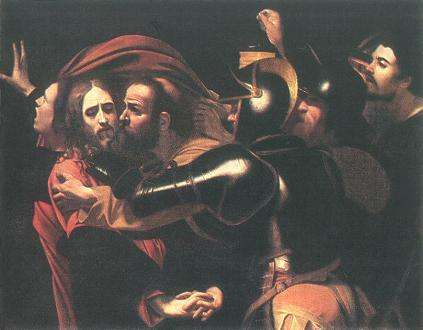
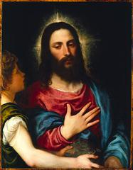
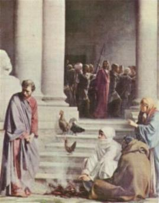
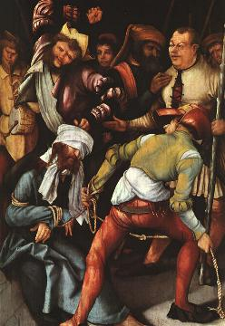
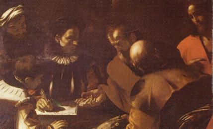
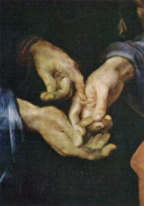
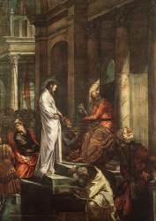
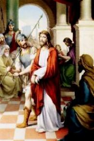

- Aproximava-se da meia-noite, quando por entre os arvoredos do
- Aproximava-se da meia-noite, quando por entre os arvoredos do
Getsêmani, surgiu Judas Iscariotes acompanhado por um destacamento da guarda
romana e grande multidão de pessoas, com espadas, paus, lanternas e archotes,
vindos por ordem do Sumo Sacerdote Caifás, para prender JESUS. Iscariotes
conhecia os lugares onde ELE gostava de ficar, então foi fácil localizá-lo. E
com um beijo, para identificá-lo, o traidor entregou o SENHOR aos que tramavam
contra o Mestre. Os soldados levaram-NO para a casa de José Ben Caifás, onde
também se encontrava Anás, seu sogro e diversos daqueles que estavam
mancomunados no mesmo projeto. Lá mesmo, improvisaram uma sessão extraordinária
do Conselho, o que habitualmente era realizado pela manhã no Templo, com a
presença de todos os membros. Mas tentavam com este expediente, preparar o
processo de culpa, sem qualquer interferência. E para que aparentasse um
procedimento normal e de acordo com a lei, convidaram os representantes romanos,
que acompanhavam as reuniões do Sinédrio e ficavam a disposição dos Juízes
para a execução de suas decisões.

- Aqueles que tinham conspirado levantavam as vozes e acusavam
o
SENHOR, dizendo que em face de suas pregações e dos milagres
que fazia, tinha conseguido a adesão do povo, que O seguia com entusiasmo para
onde ELE se dirigisse. Isto, segundo os acusadores, ia provocar a reação do Império
Romano, porque César poderia imaginar que em JESUS estivesse nascendo um
líder para libertar Israel do jugo romano. Na sequência, surgiram vozes que
acusavam o SENHOR de ter infligido a lei do “Shabat”(Era o sétimo dia da semana, dia
santificado dos judeus, dedicado ao repouso e meditação. JESUS tinha feito
muitas curas nos sábados, o que era proibido pela lei). Outros O acusavam de
arbitrariedade, referindo-se ao
“incidente no Templo”, quando ELE movido por
um grande desprezo contra aqueles que ali negociavam, expulsou todos os
comerciantes e cambistas que estavam com suas bancas instaladas embaixo dos
pórticos dentro do Templo em Jerusalém, fazendo com que respeitassem a lei,
cujo cumprimento estava a cargo de um grupo de sacerdotes, que não se
preocupavam com a execução da mesma, provavelmente porque
recebiam alguma vantagem dos cambistas, e que por isso mesmo, ficaram
furiosos com aquele desvelo de JESUS. Outros acusadores falaram no
Messianismo em que ELE se proclamava ser o Verdadeiro Enviado de
DEUS, o Messias que veio para construir um “Novo Reino”. Neste último item
de acusação, para o preparo do processo condenatório, eles se portaram de
maneira extremamente sutil, pois afirmavam que Rei era um só, CÉSAR, e,
portanto, este que se fazia passar por
“Rei dos Judeus”, era um impostor e devia ser condenado.
Com este procedimento, os que tramavam contra o SENHOR, fomentavam uma
acusação com sentido político, para despertar o interesse dos administradores
romanos, fazendo com que eles concordassem em condenar o Rabi de
Nazaré.


- Simão Pedro e João Evangelista, que acompanhavam os
acontecimentos à distância, conseguiram com habilidade entrar no pátio da
casa de Caifás, para presenciarem o desenrolar do processo. Todavia, foi lá
que Pedro negou JESUS por três vezes! Interpelado pelas pessoas, disse que não
conhecia o acusado, e depois de mentir pela terceira vez, ouviu o galo cantar.
Lembrando-se da palavra do SENHOR, ficou triste e desapontado consigo mesmo.
Saiu daquele recinto e chorou amargamente o seu procedimento. E o seu
arrependimento foi tão profundo, que as lágrimas sulcaram-lhe a
pele, deixando profundas marcas em sua face, em ambos os lados, desfigurando-lhe
o rosto pelo inditoso sofrimento.
- As acusações continuavam... Agora acusavam-NO de ter
blasfemado!
JESUS permanecia impassível, não respondia as
perguntas que lhe eram feitas e não se defendia das acusações.
Os conspiradores sabiam que aquelas acusações eram
insignificantes para condená-LO e por isso, estavam desorientados. Acrescia que
além de maus, eram também abomináveis e covardes, tinham medo de encará-LO, o
vigor e a força do olhar de JESUS desnudava a podridão íntima de cada um deles,
além de enfraquecer as suas malévolas intenções.
Por isso, afoitamente um aproximou-se por detrás DELE
e amarrou um pano cobrindo os olhos do SENHOR. (Mt 26,68)(Mc 14,65)(Lc 22,64)
Agora sim, eles puderam ficar a vontade. Apareceram
os “corajosos” e
“destemidos” que queriam
desforrar suas invejas e aliviar os seus recalques
“sem serem vistos”, como imaginavam. E concretizando toda baixeza
e deformação do caráter, cuspiam no Rosto Sagrado de JESUS, esbofeteavam sua Face,
enquanto outros LHE puxavam os cabelos e grosseiramente perguntavam se ELE
adivinhava quem O estava maltratando?
E por um bom tempo extravasaram toda a maldade de
seus corações corrompidos e empedernidos, mostrando a podridão fétida
de almas possuídas pelo demônio.
De repente, eles são interrompidos no satânico
prazer. Chegam diversos anciãos do povo que também pertenciam ao Grande
Conselho e que propositalmente não tinham sido convocados, porque eram pessoas
equilibradas e zelosas no cumprimento do direito e da justiça. Então,
aconteceram as confabulações, os desmentidos, as desculpas, e como até
aquele momento não haviam logrado qualquer tipo de condenação contra ELE,
decidiram realizar outra sessão no dia seguinte, pela manhã no Templo, no horário
habitual, com a solenidade de costume.
Levaram JESUS para o Pretório, na Fortaleza Antonia,
construída próxima ao Templo em Jerusalém, onde ELE passou o restante da madrugada.
- Judas Iscariotes furtivamente a tudo assistia e logo começou a
compreender que o Mestre desta vez não estava fazendo prevalecer o seu poder,
a força de sua natureza Divina, não estava querendo escapar das mãos dos
condenadores. Percebeu também que a trama feita por Caifás e aqueles que
conspiraram com ele, não tinha somente a intenção de assustar e intimidar JESUS,
a fim DELE parar com a pregação e os milagres, conforme lhe haviam prometido,
mas revelava o objetivo concreto de querer eliminá-LO.
Pensativo e amargurado por causa de seus
próprios pecados foi ao encontro dos sacerdotes e devolveu-lhes as 30 moedas de prata,
reclamando que eles estavam 
excedendo nas maldades, deixando transparecer que realmente
eles pretendiam matar JESUS. Os sacerdotes deram boas risadas e o ameaçaram,
mandando que saísse imediatamente dali. (Mt 27,3-4)
Judas arrependido, agora compreendia o
alcance de sua traição. Saiu da cidade e alcançou o Vale Cedron. Antes de
subir para o Jardim do Getsêmani, levado pelo desespero e total descontrole de
seus sentimentos, enforcou-se numa árvore, ficando seu corpo dependurado
pelo pescoço.
Com as 30 moedas de prata, os sacerdotes
compraram o terreno de um oleiro, entre os Vales Cedron e Hinon, não muito distante
do local onde Judas se suicidou. A este campo deram o nome de “hacéldama”, palavra aramaica
que significa “Campo de Sangue”
o qual, serve ainda hoje, para o sepultamento dos estrangeiros,
cumprindo assim mais uma profecia, conforme palavra do profeta.
(Mt 27,5 -10)
- No dia seguinte, seguindo o ritual judaico,
reuniu-se o Conselho, agora com todos os seus membros.
Entretanto, as acusações eram as mesmas, sem
fundamento e desprovidas de veracidade. Isto trouxe a imediata reação daqueles
que não tinham sido convidados para a reunião anterior na casa de Caifás,
ocorrendo as inevitáveis discussões.
Mas como a decisão final cabia a autoridade romana,
enviaram JESUS a Poncio Pilatos, que era o Procurador da Judéia e Governador de
Jerusalém.
- O Governador recebeu JESUS com a recomendação do Grande
Conselho Judeu, de que
fosse condenado a morte, porque era revolucionário, agitador e perturbador da
ordem pública.
Astuto, autoritário e perverso, Pilatos também era
frio e calculista, sempre se preocupava em atender os próprios interesses
e raramente em atender os interesses do povo. Não olhava a religião com bons
olhos, porque considerava os profetas e sacerdotes, falsos e interesseiros.
Por essa razão, os inteligentes membros do
Sinédrio, que conheciam o caráter de Pilatos, procuraram apresentar JESUS como
um revolucionário, a fim de ensejar ao Governador uma atuação de justiceiro e
vingador, perante o Senado em Roma. Dessa forma, apareceria como se ele apoiado
pelo Conselho judeu e muita gente do povo, tivesse desbaratado um complô e
preso o principal responsável, que se fazia passar por “Rei dos Judeus”.
No julgamento, Pilatos perguntou a
JESUS:
“És tu o Rei dos judeus?” (Lc 23,3)
ELE abatido pelos maus tratos recebidos no Sinédrio
e pela noite sem dormir no Pretório, deixava transparecer tristeza e cansaço.
Levantando a cabeça respondeu:
“Meu reino não é deste mundo. Se Meu
reino fosse deste mundo, meus súditos teriam combatido para EU não ser
entregue aos judeus. Mas Meu reino não é daqui”.(Jo 18,36)
-
“Então, tu és Rei?” Insistiu Pilatos.(Jo 18,37)
-
“Tu o dizes: EU sou Rei”. Respondeu JESUS (Jo 18,37)
Pilatos descendo do trono e fazendo sutil jogo de
palavras falou:
- “Não
encontro neste Homem motivo algum de condenação”. (Lc 23,4)
O Governador começou a perceber que se tratava
de uma disputa religiosa e por isso, não estava querendo definir a sua posição no
julgamento.
Todavia, elementos ligados aos Sumos-Sacerdotes,
habilmente distribuídos no meio da multidão que presenciavam o desenrolar do
processo, vendo a indecisão de Pilatos, começaram a insuflar o povo. A turba
instigada por aqueles elementos, ficou exaltada e formou-se uma imensa baderna,
gritando em alta voz que o Rabi de Nazaré era culpado e devia ser condenado,
porque “ELE sublevava o povo, ensinando
(a revolta contra as leis e os costumes) por toda a Judéia, desde a Galiléia”.(Lc 23,5)
Ouvindo estas palavras, Pilatos
compreendeu que JESUS vivia na Galiléia, o que significava dizer que ELE
morava sob a jurisdição de Herodes Antipas, o Tetrarca da Galiléia e da Peréia.
Era outra oportunidade que surgia para melhorar a sua imagem pessoal,
considerando que desde alguns anos Pilatos vivia de “relações estremecidas” com
Herodes.
Ordenou que levassem o Prisioneiro a presença do
Tetrarca, que se encontrava de férias em Jerusalém.
- O Administrador Romano exercitando o seu “cinismo crônico”
recebeu JESUS
com muita alegria, pois imaginou ser aquela a oportunidade de ver um milagre
feito por ELE. Logo ordenou que providenciassem um coxo. Colocaram um homem
coxo diante do SENHOR.
JESUS, com o semblante cheio de tristeza olhou
para o homem e abaixou a cabeça.
Então, Herodes não satisfeito, fez uma porção de
perguntas ao SENHOR, que ELE ouvia, mas permanecia em silêncio e cabisbaixo,
não respondendo a nenhuma delas.
JESUS já conhecia a fama de Herodes Antipas... Foi
aquele mesmo que para satisfazer um prazer mandou decapitar João Batista, isto,
sem enumerar uma costumeira prática de abusos, perversidades e atrocidades de
variadas espécies. Por isso, em certa ocasião referindo-se ao Tetrarca,
o SENHOR chamou-o de “raposa”
(Lc 13,32), em face de suas qualidades traiçoeiras,
cruéis e covardes.
Os sacerdotes, escribas e anciãos do povo, que
estavam na base da escadaria do Palácio onde Herodes estava hospedado,
iniciaram de maneira áspera e com veemência, uma provocadora acusação contra
o SENHOR. Contudo, sem qualquer resultado, porque ELE permaneceu em silêncio.
O Tetrarca vendo que nada conseguia, começou a
tratá-LO com desprezo e a zombar DELE, sendo acompanhado pelos seus servos, os
sacerdotes e os escribas. Estando de férias, não estava com disposição para
julgar ninguém, e muito menos enfrentar JESUS, em face de seu constante mutismo. Por
isso, ficou entediado e mandou-O de volta a Pilatos.
 Próxima Página
Próxima Página
Página Anterior
Retorna ao Índice